건설기계설비기사 (2003-08-10 기출문제)
1과목: 재료역학
1. 그림과 같이 원추형 봉이 연직으로 매달려 있다. 길이 ℓ, 고정단의 직경 d, 비중량이 γ 인 경우 봉의 자중에 의한 신장량은?
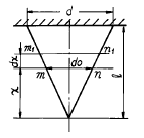
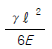
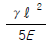
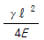
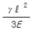
(정답률: 알수없음)

2. 지름 4 ㎝ 의 둥근봉 펀치다이스에서 두께 t = 1 ㎝ 의 강판에 펀칭구멍을 뚫을 때, 판의 전단강도가 τu = 400 MPa 라면 펀치 해머에 가해져야 하는 펀칭력은 몇 kN 인가?
- 251.5
- 502.6
- 754.5
- 1006
(정답률: 알수없음)
3. 재료시험에서 연강재료의 탄성계수 E = 210 GPa 을 얻었을 때 포아송 비가 0.303 이면 이 재료의 전단 탄성계수 G는 몇 GPa 인가?
- 8.⑤
- 10.5
- 35
- 80.5
(정답률: 알수없음)
4. 그림에서 인장력 12 kN 이 작용할 때 지름 20 mm 인 리벳 단면에 일어나는 전단 응력은 몇 MPa 인가?
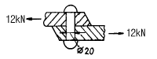
- 68.2
- 38.2
- 23.8
- 32.0
(정답률: 알수없음)
5. 지름이 d이고 길이가 L인 환봉이 있다. 이 환봉에 압축하중 P가 작용하여 지름이 do로 변했다면, 환봉 재료의 포아송비는 어떻게 표현되는가? (단, 환봉의 탄성계수는 E이다.)
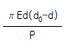
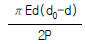
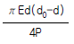
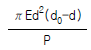
(정답률: 알수없음)
6. 코일 스프링이 600 N 의 힘이 작용되어 0.03 m 의 변형을 일으켰다. 이 때 이 스프링에 저장된 탄성에너지는?
- 18 N·m
- 6 N·m
- 9 N·m
- 12 N·m
(정답률: 알수없음)
7. 그림과 같이 지름 50 ㎜ 의 연강봉의 일단을 벽에 고정하고, 자유단에 600 N 의 하중을 작용시킬 때 발생하는 주응력과 최대 전단응력은 각각 몇 MPa 인가?
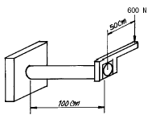
- 주응력 : 51.8
최대전단응력 : 27.3 - 주응력 : 27.3
최대전단응력 : 51.8 - 주응력 : 41.8
최대전단응력 : 27.3 - 주응력 : 27.3
최대전단응력 : 41.8
(정답률: 알수없음)
8. 다음 그림과 같이 연속보가 균일 분포하중(q)을 받고 있을 때 A점의 반력은?
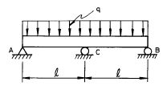
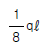
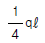
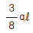
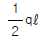
(정답률: 알수없음)
9. σx = 700 MPa, σy = -300 MPa 가 작용하는 평면응력 상태에서 최대 수직응력과 최대 전단응력은?
- σmax = 700 MPa, τmax = 300 MPa
- σmax = 600 MPa, τmax = 400 MPa
- σmax = 500 MPa, τmax = 700 MPa
- σmax = 700 MPa, τmax = 500 MPa
(정답률: 알수없음)
10. 다음 그림에 대한 설명 중 틀린 것은?
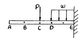
- A, B, C점의 기울기는 전부 같다.
- 구간 CD에서의 전단력은 선형으로 변화한다.
- E점의 경사각은 0이다.
- CD 구간에 작용하는 모멘트는 선형으로 변화한다.
(정답률: 알수없음)
11. 반지름이 r 이고 벽 두께가 t 인 얇은 벽의 구형 용기가 P 의 균일 분포 내압을 받고 있을 때 그벽속에 발생하는 막응력(membrane stress)은 얼마인가?
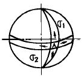
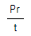
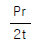
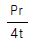
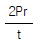
(정답률: 알수없음)
12. 입방체가 그 표면에 외부로부터 균일한 압력 P를 받고 있을 때, 체적 변화율을 표현한 식은? (단, μ는 프와송비, E는 탄성 계수이다.)
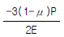
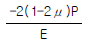
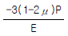
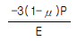
(정답률: 알수없음)
13. 그림과 같은 단면의 보에서 X축에 대한 단면계수는?
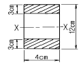
- 72 ㎝3
- 78 ㎝3
- 84 ㎝3
- 504 ㎝3
(정답률: 알수없음)
14. 내경이 30 mm 이고 외경이 42 mm 인 중공축이 100 kW 의 동력을 전달하는데 이용된다. 전단응력이 50 MPa 을 초과하지 않도록 축의 회전진동수를 구하면 몇 Hz 인가?
- 26.6
- 29.6
- 33.4
- 37.8
(정답률: 알수없음)
15. 길이 L인 회전축이 비틀림 모멘트 T를 받을 때 비틀림각도(θ°)는?
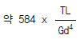
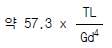
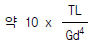
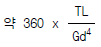
(정답률: 알수없음)
16. 중공(中空)의 강실린더 안에 구리 원통이 들어있고 높이는 500 mm로 동일하다. 강실린더의 단면적은 2000 mm2 이고, 구리 원통의 단면적은 5000 mm2이다. 구리 원통이 모든 하중을 받게하기 위해 필요한 온도상승은 최소 몇 ℃ 인가?(단, 하중은 200 kN이며, 하중을 받는 판은 변형하지 않는다. 구리 E = 120 GN/m2, α = 20 x 10-6 /℃, 철 E = 200 GN/m2, α = 12 x 10-6 /℃)
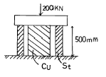
- 38
- 40
- 42
- 45
(정답률: 알수없음)
17. 양단이 핀으로 고정되어 있고, 정사각형의 단면 25 mm x 25 mm, 길이 1.8 m인 기둥에서의 오일러식에 의한 임계 하중은 몇 kN 인가?(단, 탄성계수 E = 70 GPa 이다.)
- 1.302
- 2.604
- 3.470
- 6.941
(정답률: 알수없음)
18. 길이가 L이고 직경이 d인 축에 굽힘 모멘트 M과 비틀림 모멘트 T가 동시에 작용하고 있다면 최대 전단응력은?
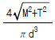
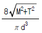
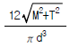
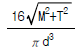
(정답률: 알수없음)
19. 그림과 같은 복합 막대가 각각 단면적 AAB=100 ㎜2, ABC =200 ㎜2을 갖는 두 부분 AB와 BC로 되어있다. 막대가 100 kN의 인장하중을 받을 때 총 신장량을 구하면?(단, 재료의 탄성계수(E)는 200 GPa이다.)
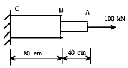
- 2 mm
- 4 mm
- 6 mm
- 8 mm
(정답률: 알수없음)
20. 보의 탄성곡선의 곡률은 어느 것인가? (단, M : 굽힘모멘트, E : 탄성계수, Ⅰ: 단면2차모멘트)
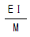
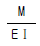
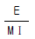
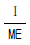
(정답률: 알수없음)
2과목: 기계열역학
21. 이상기체의 엔트로피가 변하지 않는 과정은?
- 가역 단열 과정
- 스로틀 과정
- 가역 등온 과정
- 가역 정압과정
(정답률: 알수없음)
22. 노점온도가 25℃인 습공기의 온도가 40℃ 이다. 25℃와 40℃에서의 수증기의 포화압력이 각각 3.17kPa, 7.38kPa 이라면 상대습도는?
- 0.76
- 0.66
- 0.56
- 0.43
(정답률: 알수없음)
23. 카르노사이클을 옳게 설명한 것은?
- 이상적인 2개의 등온과정과 이상적인 2개의 정압과정으로 이루어진다.
- 이상적인 2개의 정압과정과 이상적인 2개의 단열과정으로 이루어진다.
- 이상적인 2개의 정압과정과 이상적인 2개의 정적과정으로 이루어진다.
- 이상적인 2개의 등온과정과 이상적인 2개의 단열과정으로 이루어진다.
(정답률: 알수없음)
24. 과열, 과냉이 없는 이상적인 증기압축 냉동사이클에서 증발온도가 일정하고 응축온도가 내려 갈수록 성능계수는?
- 증가한다.
- 감소한다.
- 일정하다.
- 증가하기도 하고 감소하기도 한다.
(정답률: 알수없음)
25. 200 m의 높이로 부터 물 250 ㎏이 땅으로 떨어질 경우, 일을 열량으로 환산하면 약 몇 kJ인가?
- 117
- 79
- 203
- 490
(정답률: 알수없음)
26. 1.2 MPa, 300℃의 과열증기가 있다. 이 증기의 질량유량 18,000 ㎏/h를 속도 30 m/s로 보내려면 지름 몇 cm의 관이 필요한가? (단, 1.2 MPa, 300℃ 과열증기의 비체적은 0.2183 m3/kg 이다.)
- 18.6
- 12.5
- 20.6
- 21.5
(정답률: 알수없음)
27. 다음 사항 중 틀린 것은?
- 노즐에서 배압이 임계압력보다 낮을 경우 배압이 아무리 내려가도 출구에서의 유량은 임계유량이 유지되며 일정하다.
- 축소 노즐의 목(최소단면적)에서 속도가 음속이 되면 목에서의 압력이 임계압력이다.
- 축소.확대 노즐에서는 음속을 넘는 유속을 얻을 수 없다.
- 엔탈피 운동에너지로 변환시키는데 노즐이 사용된다.
(정답률: 알수없음)
28. 체적 0.2 m3의 용기내에 압력 1.5 MPa, 온도 20℃의 공기가 들어 있다. 온도를 15℃로 유지하면서 1.5 ㎏의 공기를 빼내면 용기내의 압력은? (단, 공기의 기체상수 R = 0.287 kJ/㎏.K 이다.)
- 약 0.43 MPa
- 약 0.85 MPa
- 약 0.60 MPa
- 약 0.98 MPa
(정답률: 알수없음)
29. 공기 15 ㎏과 수증기 5 ㎏이 혼합되어 10 m3의 용기속에 들어있다. 혼합기체의 온도가 80℃ 라면, 압력(kPa)은 약 얼마인가? (단, 공기와 수증기를 이상기체라 가정하고 각각의 기체 상수는 각각 287과 462 J/㎏.K이다.)
- 234
- 426
- 575
- 647
(정답률: 알수없음)
30. 축소-확대 노즐에서 얻어지는 유체속도는?
- 항상 음속
- 항상 아음속
- 항상 초음속
- 아음속 또는 초음속
(정답률: 알수없음)
31. 이상기체에 관해서 맞는 것은?
- 내부에너지는 압력만의 함수이다.
- 내부에너지는 체적만의 함수이다.
- 내부에너지는 온도만의 함수이다.
- 내부에너지는 엔트로피만의 함수이다.
(정답률: 알수없음)
32. 오토 사이클에서 101.3 kPa, 21℃의 공기가 압축비 7로 압축될 때, 오토 사이클의 효율은? (단, 공기의 비열비 k=1.4로 한다.)
- 98%
- 54%
- 46%
- 86%
(정답률: 알수없음)
33. 한 액체 연료의 원소분석 결과 질량비로 C 86%, H2 14% 였다. 이 연료 1 ㎏을 완전연소할 때 생성되는 수증기(H2O)의 양은?
- 1.26 ㎏
- 1.52 ㎏
- 12.6 ㎏
- 15.2 ㎏
(정답률: 알수없음)
34. 물 1 ㎏이 압력 300 kPa에서 증발할 때 증가한 체적이 0.8 m3이었다면, 이때의 외부 일은? (단, 온도는 일정하다고 가정한다.)
- 240 kJ
- 320 kJ
- 180 kJ
- 280 kJ
(정답률: 알수없음)
35. 증기압축식 냉동기에서 냉매의 증발온도가 -10℃, 응축온도가 25℃이다. 표준 사이클의 성능 계수는? (단, 아래 그림을 참조하여 가장 가까운 답을 고르시오.)
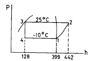
- 5.50
- 5.80
- 6.30
- 6.90
(정답률: 알수없음)
36. 이상기체가 단열된 관내를 흐를 때 운동에너지와 위치에너지의 변화를 무시할 수 있을 경우 온도의 변화는?
- 증가 한다.
- 변화가 없다.
- 감소 한다.
- 기체의 종류에 따라 다르다.
(정답률: 알수없음)
37. 환산 온도(Tr )와 환산 압력(Pr )을 이용하여 나타낸 다음과 같은 상태방정식이 있다.
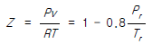
어떤물질의 기체상수가 0.189 kJ/kg.K, 임계온도가 3⑤K, 임계압력이 7380 kPa이다. 이 물질의 비체적을 위의 방정식을 이용하여 20℃, 1000 kPa 상태에서 구하면?- 0.0111 m3/kg
- 0.0443 m3/kg
- 0.0492 m3/kg
- 0.⑤54 m3/kg
(정답률: 알수없음)
38. 고열원과 저열원 사이에서 작동하는 카르노(carnot)사이클 열기관이 있다. 이 열기관에서 60 kJ의 일을 얻기 위하여 100 kJ의 열을 공급하고 있다. 저열원의 온도가 15℃라고 하면 고열원의 온도는?
- 128 ℃
- 720 ℃
- 288 ℃
- 447 ℃
(정답률: 알수없음)
39. 공기 1㎏이 카르노 기관의 실린더 내에서 온도 100℃하에 100kJ의 열량을 받고 등온 팽창하였다. 주위온도를 0℃라 할 때, 비가용에너지(unavailable energy)는?
- 약 43.9kJ
- 약 64.4kJ
- 약 73.2kJ
- 약 100kJ
(정답률: 알수없음)
40. 1㎏의 습포화 증기속에 증기상이 x ㎏, 액상이 (1-x)㎏포함되어 있을 때 습기도는 다음의 어느 것으로 표시되겠는 가?
- x
- x-1
- 1-x
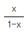
(정답률: 알수없음)
3과목: 기계유체역학
41. 액체의 자유 표면에서부터 2.5 m 깊이의 게이지 압력이 19.6 kPa 일 때 이 액체의 비중은?
- 0.8
- 1
- 8.3
- 4.93
(정답률: 알수없음)
42. 지름 50 mm 인 파이프에서 분사된 물분류가 평판에 수직으로 부딪쳐서 785 N 의 힘이 가해졌다. 이 때의 유속은 몇 m/s 인가? (단, 물의 밀도는1000 kg / m3, 중력가속도는 9.81 m / s2 이다.)
- 15
- 20
- 25
- 30
(정답률: 알수없음)
43. 점성계수가 0.25 kg/m·s 인 유체가 지면과 수평으로 놓인 평판 위를 흐른다. 평판 근방의 속도 분포가 u = 5.0 - 100(0.3 - y)2 일 때 평판에서의 전단응력은? (단, y(m)는 평판면에 수직 방향의 좌표이고, u(m/s)는 평판 근방에서 유체가 흐르는 방향의 속도이다.)
- 3 Pa
- 30 Pa
- 1.5 Pa
- 15 Pa
(정답률: 알수없음)
44. 동일한 유량에 대하여 동일한 마찰손실을 가지려면, 안지름 20 ㎜, 길이 5 m 인 직렬관에 대한 안지름 40 ㎜ 인 관의 등가길이는 몇 m 인가?(단, 두 관의 관마찰계수는 같다고 가정한다.)
- 20
- 40
- 80
- 160
(정답률: 알수없음)
45. 원관내의 층류 유동에서 유량이 일정할 때 마찰손실 수두는?
- 관의 지름에 비례한다.
- 관의 지름에 반비례한다.
- 관의 지름의 제곱에 반비례한다.
- 관의 지름의 4제곱에 반비례한다.
(정답률: 알수없음)
46. 다음의 속도장 중에서 2차원 비압축성 연속방정식을 만족하는 것은?(단, u 는 x 방향의 속도성분, v 는 y 방향의 속도성분)
- u = 4xy + y2, v = 6xy + 3x
- u = 2x2 - y2 , v = -4xy
- u = 2x2 - y2 , v = 4xy
- u = 4x2 - y2 , v = -4xy
(정답률: 알수없음)
47. 속도 포텐셜(velocity potential)이 존재하기 위한 전제 조건은?
- 점성유동
- 정상유동
- 비회전유동
- 비압축성유동
(정답률: 알수없음)
48. 그림과 같이 U 자관 액주계가 x 방향으로 등가속 운동하는 경우, x 방향 가속도 ax 는? (수은의 비중은 13.6 이다.)
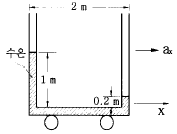
- 0.4 m/s2
- 0.98 m/s2
- 3.92 m/s2
- 4.9 m/s2
(정답률: 알수없음)
49. 지름의 비가 1 : 2 인 2 개의 모세관을 물 속에 수직으로 세울 때 모세관현상으로 물이 관속으로 올라가는 높이의 비는?
- 1 : 4
- 1 : 2
- 2 : 1
- 4 : 1
(정답률: 알수없음)
50. 그림과 같은 지름 6 cm 의 원관에 밀도 1260 kg/m3, 점성계수 1.5 N.s/m2 의 글리세린이 50 m3/hr 로 통과한다. 수두손실은 몇 m 인가?(단, 부차적손실은 무시하고, 1,2점의 높이차는 12m이다)
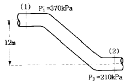
- 4.9
- 12.96
- 24.96
- 28.33
(정답률: 알수없음)
51. 2 cm x 3 cm 의 내부치수를 갖는 4 각형 단면의 매끈한 수평관 속을 평균유속 1.2 m/s 로 20 ℃ 의 물이 흐르고 있다. 관의 길이 1 m 당 손실 수두는 몇 m 인가?(단, 관마찰계수는 0.024이다.)
- 0.018
- 0.⑤4
- 0.074
- 0.0026
(정답률: 알수없음)
52. 평판을 지나는 경계층 유동에서 속도 분포가 경계층 바깥에서는 균일 속도, 경계층 내에서는 벽으로부터의 거리의 1차함수라고 가정하면 배제두께(displacement thickness) δ* 는 경계층두께 δ의 몇 배인가?
- 1/4
- 1/3
- 1/2
- 2/3
(정답률: 알수없음)
53. 어떤 유체의 전단응력과 속도구배(전단변형도율)의 관계는
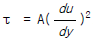
으로 표시된다. A 의 차원은?- ML-1T2
- ML-1
- ML-2T2
- M2L-1T2
(정답률: 알수없음)
54. 점성계수가 0.⑤ N.s / m2 인 원유가 평행 평판 사이에 들어있다. 바닥평판은 고정되어 있고 위 평판에는 힘 P 가 가해져 운동하고 있다. 두 평판 사이의 간격이 2 mm 일 때, 위 평판이 2 m / s 의 속도로 운동하려면 힘 P 는 몇 N 인가?(단, 위 평판의 유효면적은 300 cm x 300 cm 이다.)
- 410
- 420
- 440
- 450
(정답률: 알수없음)
55. 보정계수 C = 0.98 인 피토 정압관으로 물의 유속을 측정하려고 한다. 액주계에는 비중이 13.6 인 수은이 들어 있고 액주계의 읽음이 200 mm 일 때 유속은 몇 m/s 인가?
- 1.4
- 6.9
- 7.7
- 10.5
(정답률: 알수없음)
56. 그림과 같은 사이펀에서 마찰손실을 무시할 때, 흐를 수있는 이론적인 최대 유속은 몇 m/s 인가?
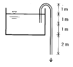
- 6.26
- 7.67
- 8.85
- 9.90
(정답률: 알수없음)
57. 손실계수 KL = 15 인 밸브가 파이프에 설치되어 있다. 이 파이프에 물이 3 m / s 의 속도로 흐르고 있다면, 밸브에 의한 손실수두는 몇 m 인가?
- 67.5
- 22.5
- 6.88
- 11.25
(정답률: 알수없음)
58. 체적 2x10-3 m3 의 돌이 물속에서의 무게가 40 N 이었다면 공기중에서의 무게는 몇 N 인가?
- 19.6
- 42
- 59.6
- 2
(정답률: 알수없음)
59. 압력이 101.25 kPa 인 상온의 공기가 가역단열 변화를 할때 체적탄성계수는 약 몇 Pa 인가?(단, 공기의 비열비는 1.4 이다.)
- 101250
- 141750
- 14175500
- 10125400
(정답률: 알수없음)
60. 다음 중 관내 유동에서 마찰계수, 또는 Darcy 마찰계수라고 불리는 무차원량을 표현한 식은?
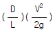
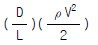
(정답률: 알수없음)
4과목: 유체기계 및 유압기기
61. 추의 낙하를 방지하기 위해서 배압을 유지시켜 주는 압력제어 밸브는?
- 릴리프 밸브
- 체크 밸브
- 시퀀스 밸브
- 카운터 밸런스 밸브
(정답률: 알수없음)
62. 자동차용 고속 디젤기관을 가솔린기관과 비교했을때의 장점은?
- 일산화탄소(CO)와 탄화수소(HC)의 배출량이 많다.
- 압축비를 크게 할 수 있으며 열효율이 좋다.
- 연료 소비율이 높다.
- 무게가 무거워 토크 변동이 크다.
(정답률: 알수없음)
63. 가솔린기관에서 노킹의 발생은 어느 경우에 잘 일어나는 가?
- 옥탄가가 낮은 연료를 사용한 경우
- 정상연소의 속도가 큰 경우
- 화염 전파거리가 짧은 경우
- 압축비가 낮거나 흡기온도가 낮은 경우
(정답률: 알수없음)
64. 왕복형 내연기관이 증기터빈에 비하여 불리한 점은?
- 열효율이 낮다.
- 마력당 중량이 크다.
- 자력기동(self starting)을 할 수 없다.
- 저속회전용으로는 부적합하다.
(정답률: 알수없음)
65. 유압 신호를 전기 신호로 전환시키는 일종의 스위치로 전동기의 기동, 솔레노이드 조작밸브의 개폐 등의 목적에 사용되는 유압 기기인 것은?
- 유압 퓨즈(fluid fuse)
- 압력스위치(pressure switch)
- 축압기(accumulator)
- 배압형 센서(back pressure sensor)
(정답률: 알수없음)
66. 디젤기관의 연소에 있어서 다른 조건이 모두 같을 때 지연기간(delay period)이 길면 그 다음의 급격 연소기간 중의 압력상승률은 어떻게 되는가?
- 지연기간이 길면 압력상승률이 작아진다.
- 지연기간이 길어져도 압력상승률은 변화하지 않는다.
- 지연기간이 길면 압력상승률이 커진다.
- 지연기간이 길면 압력상승률이 커질 때도 있고, 작아 질 때도 있다.
(정답률: 알수없음)
67. 입력 축과 출력 축의 회전력을 변화시키기 위하여 펌프와 터빈의 중간에 스테이터를 설치한 유체 전동기구는?
- 쇼크 업 소버
- 토크 컨버터
- 진동 개폐 밸브
- 유압 잭
(정답률: 알수없음)
68. 그림과 같은 사바테(Sabathe) 싸이클의 P-V선도에서 폭발 비(rate of explosion) ρ 를 구하는 식은?
(정답률: 알수없음)
69. 유압호스(hose)의 사용 목적 설명으로 틀린 것은?
- 유압회로의 서지 압력을 흡수한다.
- 결합부의 상대 위치가 변하는 경우 사용한다.
- 진동을 흡수한다.
- 고압 회로로 변환하기 위해 사용한다.
(정답률: 알수없음)
70. 다음 중 유압 작동유의 점도가 너무 높을 경우 나타나는 현상으로 가장 적합한 것은?
- 내부 누설의 증대
- 동력 손실의 증대
- 마찰부분의 마모 증대
- 펌프 효율의 상승
(정답률: 알수없음)
71. 분무형 증발기와 전기점화장치를 갖추어 기화하기 어려운 등유를 연료로 하는 기관은?
- 가솔린기관
- 디젤기관
- 석유기관
- 소구기관
(정답률: 알수없음)
72. 실린더의 내경 x 행정이 95 mm x 100 mm 일 때 압축비가 20 : 1 이라면 연소실 체적은 얼마인가?
- 약 708.8 cm3
- 약 37.3 cm3
- 약 74.6 cm3
- 약 35.4 cm3
(정답률: 알수없음)
73. 디젤 기관의 전부하에 있어서 1850 rpm 인 경우의 출력을 110 PS 라 하면 토크는 얼마인가?
- 24.8 kgf.m
- 35.6 kgf.m
- 57.9 kgf.m
- 42.6 kgf.m
(정답률: 알수없음)
74. 압력 오버라이드(pressure override)에 대한 설명으로 가장 적합한 것은?
- 커질 수록 릴리프 밸브의 특성이 좋아진다.
- 설정압력과 크래킹압력의 차이다.
- 밸브의 진동과는 관계없다.
- 전량 압력이다.
(정답률: 알수없음)
75. 다음 중 가스터빈의 사이클에 대한 설명 중 틀린 것은?
- 2개의 정압과정과 2개의 단열과정으로 구성된다.
- 브레이턴 사이클 또는 줄 사이클이라고도 한다.
- 단열압축과정 → 정압급열과정 → 단열팽창과정 → 정압 방열과정으로 구성된다.
- 열효율은 터빈에 유입되는 가스온도가 높을수록, 열교환기에 유입되는 공기온도가 높을수록 높아지는 것을 의미한다.
(정답률: 알수없음)
76. 다음 펌프 중 가장 높은 압력을 생성할 수 있는 펌프는?
- 베인 펌프
- 내접기어 펌프
- 스크류 펌프
- 피스톤 펌프
(정답률: 알수없음)
77. 소형 리프팅장치에서 유압 실린더의 지름이 10cm, 펌프의 이론 송출량이 40ℓ /min이면, 추력 3kgf인 유압 실린더의 속도는 몇 cm/s 인가? (단, 용적 효율은 93 % 이다.)
- 7.9
- 8.6
- 9.4
- 10.7
(정답률: 알수없음)
78. 유압기기와 관련되는 유체의 동역학에 대한 다음의 설명중 올바른 설명은?
- 유체의 속도는 단면적이 큰 곳에서는 빠르다.
- 점성이 없는 비압축성의 액체가 수평관을 흐를 때, 압력수두와 위치수두 및 속도수두의 합은 일정하다.
- 유속이 크고 굵은 관을 통과할 때 층류가 발생한다.
- 유속이 작고 가는 관을 통과할 때 난류가 발생한다.
(정답률: 알수없음)
79. 보기 기호은 어떤 유압기호인가?
- 서보밸브
- 교축전환밸브
- 파일럿밸브
- 셔틀밸브
(정답률: 알수없음)
80. 윤활유의 성질 개선향상을 위하여 첨가제를 사용하는데 개선향상을 위한 첨가제가 아닌 것은?
- 유동점 향상제
- 점도지수 향상제
- 산화방지제
- 청정제
(정답률: 알수없음)
5과목: 건설기계일반 및 플랜트배관
81. 굴삭기의 상부회전체가 하부프레임의 스윙베어링에 지지되어 있다. 상부회전체의 무게(W) = 5ton, 선회속도(V) = 3m/sec, 마찰계수(μ ) = 0.1 일 경우 선회동력(H)은?
- 14.7 kW
- 17.3 kW
- 20.1 kW
- 23.8 kW
(정답률: 알수없음)
82. 다이렉트 드라이브 변속기가 장착된 무한궤도식 불도우저가 작업중에 과부하로 인하여 작업속도가 급격히 떨어졌으나 엔진회전 속도는 저하되지 않았다고 하면, 우선 점검할 개소는?
- 내연기관(engine)
- 메인 클러치(main clutch)
- 변속기(transmission)
- 최종 구동장치(final drive system)
(정답률: 알수없음)
83. 두께 t = 2 ㎜, 탄소 C = 0.2 % 의 경질 탄소강판에 지름 20㎜ 의 구멍을 펀치로 뚫을 때, 전단하중 P = 4000 kgf 이었다. 이 때의 전단강도는?
- 약 636.8 kgf/㎜2
- 약 31.8 kgf/㎜2
- 약 318.4 kgf/㎜2
- 약 63.6 kgf/㎜2
(정답률: 알수없음)
84. 모터 그레이더의 규격표시 방법은?
- 표준 배토판의 길이(m)로 표시한다.
- 스케어리파이어(Scarifier)의 길이(m)로 표시한다.
- 작업 가능 상태의 자중(kg)으로 표시한다.
- 최대 정격마력(PS)으로 표시한다.
(정답률: 알수없음)
85. 18-4-1계 고속도강에서의 18 이 갖는 의미는?
- 탄소의 함유량
- 텅스텐의 함유량
- 크롬의 함유량
- 몰리브덴의 함유량
(정답률: 알수없음)
86. 흡파 준설선이라고 하며, 준설선 자체의 토창을 가지고 펌프로 흡입된 토사와 물을 토창에 받아 보내는 장소까지 자항하여 보내고, 다시 제자리로 돌아와 작업을 하는 것은?
- 비항펌프 준설선
- 자항펌프 준설선
- 버킷 준설선
- 그랩 준설선
(정답률: 알수없음)
87. 아스팔트피니셔에서 아스팔트 혼합재를 균일한 두께로 다듬질 하는 기구는 다음 중 어느 것인가?
- 스크리드
- 호퍼
- 피더
- 댐퍼
(정답률: 알수없음)
88. 한계 게이지 방식의 단점에 해당되는 것은?
- 조작이 복잡하므로 경험이 필요하다.
- 합격, 불합격의 판정이 어렵다.
- 제품의 실제치수를 알 수 없다.
- 대량 측정에 부적합하다.
(정답률: 알수없음)
89. TIG 용접 및 MIG 용접은 어느 용접에 해당되는가?
- 불활성가스 아크 용접
- 직류 아크 일미나이트계 피복 용접
- 교류 아크 셀룰로스계 피복 용접
- 서브머지드 아크 용접
(정답률: 알수없음)
90. 자주식 로드 롤러(road roller)를 축의 배열과 바퀴의 배열로 구분할 때 머캐덤(macadam)롤러에 해당되는 것은?
- 1축 1륜
- 2축 2륜
- 2축 3륜
- 3축 3륜
(정답률: 알수없음)
91. 광파간섭 현상을 이용한 측정기는?
- 공구 현미경
- 오토콜리메이터
- 옵티컬 플랫
- 요한슨식 각도게이지
(정답률: 알수없음)
92. 무한궤도식 주행장비의 견인력은 무엇으로 표시하는가?
- Weight pull
- Tire pull
- Draw bar pull
- Rim pull
(정답률: 알수없음)
93. 탄소강선의 냉간 인발에 있어서 가공경화가 나타나서 계속작업이 어려울 때, 조직을 소르바이트화 시키는데 이용되는 방법으로, 염욕로 중에서 항온변태를 일으키게 하는 열처리 방법은?
- 스페로다이징
- 마르퀜칭
- 패턴팅
- 완전 어닐링
(정답률: 알수없음)
94. 17 톤급 불도우저의 전진 2단에서의 견인력이 15,000 ㎏f 이고 이 때의 작업속도가 3.6 ㎞/h 라고 하면 견인출력은?
- 85 PS
- 100 PS
- 125 PS
- 200 PS
(정답률: 알수없음)
95. 콘크리트피니셔(concrete finisher)의 규격 표시 방법은?
- 콘크리트를 포설할 수 있는 표준 너비(m)
- 콘크리트를 포설할 수 있는 표준 높이(㎝)
- 콘크리트를 포설할 수 있는 표준 무게(kg)
- 콘크리트를 포설할 수 있는 표준 깊이(㎝)
(정답률: 알수없음)
96. 차량용 스프링의 수명을 연장시키기 위해 이용되는 가장 좋은 가공방법은?
- 액체 호닝
- 숏 피닝
- 슈퍼피니싱
- 래핑
(정답률: 알수없음)
97. 표준 버킷(bucket)의 산적용량(m3)으로 그 규격을 나타내는 건설기계는?
- 모터 그레이더
- 기중기
- 로우더
- 지게차
(정답률: 알수없음)
98. 절삭속도 120 m/min, 절삭깊이 6mm, 이송속도 0.25 mm/rev 으로 지름 80mm의 원형 단면봉을 선삭 한다. 500mm 길이를 선삭하는 데 필요한 가공시간은?
- 약 1.5분
- 약 4.2분
- 약 7.3분
- 약 10.1분
(정답률: 알수없음)
99. 절삭 가공변질층에 관한 설명이다. 틀린 것은?
- 가공변질층은 절삭저항의 크기에는 관계가 없다.
- 가공변질층은 내식성과 내마모성이 좋지 않다.
- 가공변질층은 흔히 잔류응력이 남는다.
- 가공변질층의 두께를 작게 하기 위해서는 가공 깊이를 여러 횟수로 나누어서 절취두께를 작게 하여 가공하여야 한다.
(정답률: 알수없음)
100. 탄소강재를 맞대어 가열하고 해머로 타격하여 접합하는 방법이며, 그 용제(flux)로 붕사 등을 사용하는 것은?
- 냉간압접(cold pressure welding)
- 초음파 용접(ultrasonic welding)
- 단접(forge welding)
- 마찰용접(friction welding)
(정답률: 알수없음)